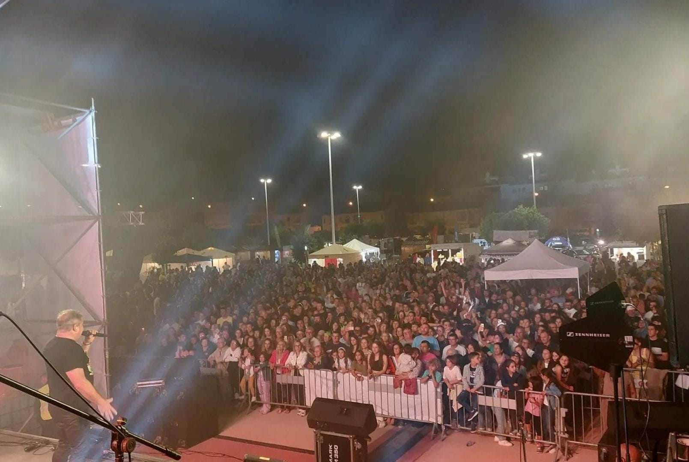

data
A UDM organizou, nos dias 7, 8, 9 e 10 de junho, a 8ª edição da Festa do Caracol no Parque de Feiras e Exposições. Esta edição contou com artistas de renome como o Toy, a Brasa Doirada, entre outros, o que levou à dinamização da vida cultural da vila.